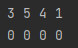
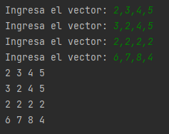
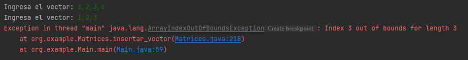
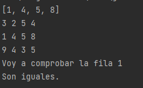
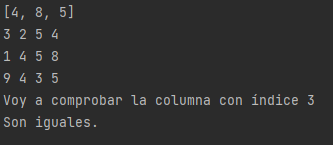

Rellenar matriz con vectores
Hasta ahora, hemos hablado todo el rato de que una matriz está compuesta de vectores... pero nunca hemos creado una a partir de estos.
Para poder hacerlo tenemos varias opciones. Desde la más fácil hasta la más difícil...
- Opción fácil: ya tengo mi vector y sé en qué fila de mi matriz lo quiero introducir.
int vector[] = {3,5,4,1};
int matriz[][] = new int[2][4];
for (int i = 0; i < matriz[0].length; i++) {
matriz[0][i] = vector[i];
}
for (int[] filas : matriz) {
for (int columnas : filas){
System.out.print(columnas + " ");
}
System.out.print("\n");
}
Sólo nos hace falta un bucle para recorrer las columnas, ya que la fila donde se insertará el vector es fija.
- Opción 2: voy creando vectores y guardándolos en una matriz automáticamente.
Scanner teclado = new Scanner(System.in);
int matriz[][] = new int[4][4];
for(int i=0; i<matriz.length; i++){
System.out.print("Ingresa el vector: ");
String[] lectura = teclado.next().split(",");
for(int j=0; j<matriz[i].length; j++){
matriz[i][j] = Integer.parseInt(lectura[j]);
}
}
for(int[] filas : matriz){
for(int columnas : filas){
System.out.print(columnas + " ");
}
System.out.print("\n");
}
En este caso tendremos que llevar cuidado, ya que, si la cadena que introducimos y convertimos en vector con .split() no tiene el mismo tamaño que número de columnas de nuestra matriz, los valores no se insertarán correctamente en la matriz (o directamente aparecerán errores de que está intentando acceder a posiciones que no existen en el vector).

Comparar valores de un vector con los de una matriz
Si necesitamos recorrer una matriz comprobando si los valores en las distintas posiciones coinciden con los de un vector, solamente necesitaremos un bucle (para dejar fija bien la fila o bien la columna).
- Para comparar valores en una fila concreta (horizontalmente),
int vector[] = {1,4,5,8};
System.out.println(Arrays.toString(vector));
int matriz[][] = {{3,2,5,4},{1,4,5,8},{9,4,3,5}};
for(int[] filas : matriz){
for(int columnas : filas){
System.out.print(columnas + " ");
}
System.out.print("\n");
}
System.out.println("Voy a comprobar la fila con índice 1");
for (int i = 0; i < matriz[1].length; i++) {
if(matriz[1][i]!=vector[i]){
System.out.println("No son iguales.");
return;
}
}
System.out.println("Son iguales.");
}
- Para comparar valores en una columna concreta (verticalmente),
int vector[] = {4,8,5};
System.out.println(Arrays.toString(vector));
int matriz[][] = {{3,2,5,4},{1,4,5,8},{9,4,3,5}};
for(int[] filas : matriz){
for(int columnas : filas){
System.out.print(columnas + " ");
}
System.out.print("\n");
}
System.out.println("Voy a comprobar la columna con índice 3");
for (int i = 0; i < matriz.length; i++) {
if(matriz[i][3]!=vector[i]){
System.out.println("No son iguales.");
return;
}
}
System.out.println("Son iguales.");
}